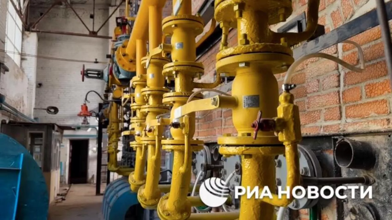
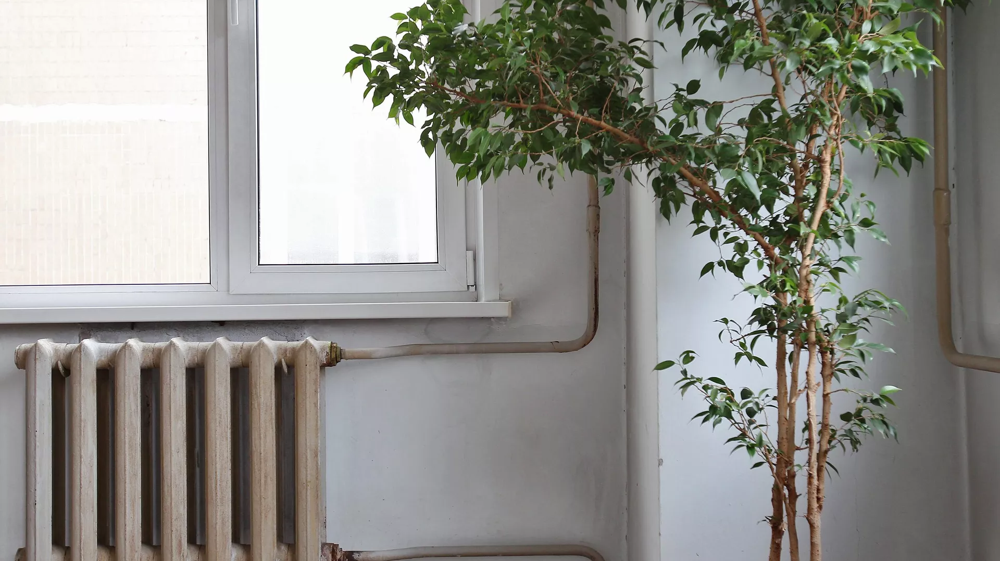
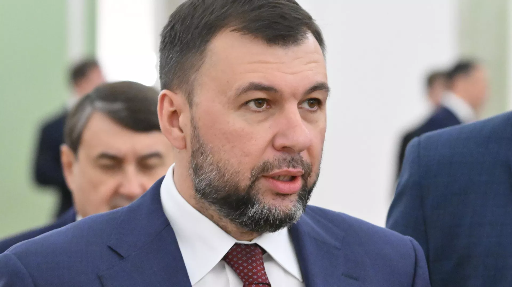
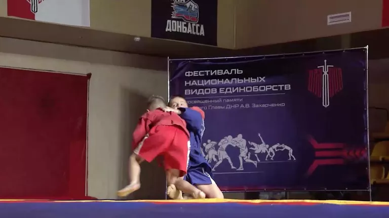
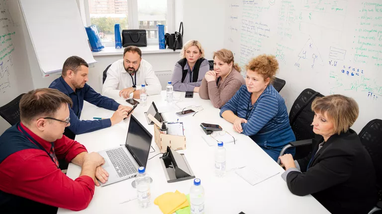

В Донецке завершили программу по восстановлению инженерной инфраструктуры

ДОНЕЦК, окт - РИА Новости. Специалисты газового хозяйства Москвы завершили программу по восстановлению инженерной инфраструктуры в Донецке на этот год, об этом РИА Новости сообщил замначальника отдела надзора за строительством инженерной компании Валерий Веремейко.
"На территории ДНР успешно завершены работы по подготовке к отопительному сезону в рамках программы по восстановлению инженерной инфраструктуры 2024 года", - скаазл он.
В ДНР завершили подготовку к отопительному сезону

В Донецкой Народной Республике завершили подготовку к отопительному сезону, заявили в министерстве строительства и ЖКХ ДНР.
«
"Донецкая Народная Республика (ДНР) объявляет о готовности к запуску отопительного сезона. Большинство муниципалитетов республики уже выдали распоряжения о старте отопления с приоритетом на объекты социальной сферы", - говорится в сообщении.
В ведомстве отметили, что уже подготовлено 24 670 многоквартирных домов и 1 994 объекта социальной инфраструктуры. Завершена подготовка 1 171 котельной, а также 1 961 километра теплосетей, 13 539 километров сетей водоснабжения и 4 690 километров сетей водоотведения. Уточняется, что из них 579 многоквартирных жилых домов, 60 объектов социального назначения, 124 объекта теплоснабжения и 46 объектов водоснабжения были подготовлены благодаря усилиям других регионов РФ, взявших шефство над районами ДНР. Также при их содействии в республике сформированы 99 аварийных бригад и привлечено 200 единиц техники, подчеркнули в республиканском министерстве.
Донецк пока нельзя назвать полностью безопасным городом, заявил Пушилин

Глава ДНР Денис Пушилин сообщил в эфире телеканала "Россия 24", что Донецк пока нельзя назвать полностью безопасным городом, поскольку ВСУ все еще обстреливают город со стороны городов Угледар и Курахово.
"Донецк еще... нельзя назвать полностью безопасным городом, несмотря на то, что это столица (региона) и что со стороны России было очень много усилий для обеспечения безопасности в рамках поручения президента", - сказал Пушилин.
Он также отметил, что после освобождения Авдеевки улучшилась ситуация в Куйбышевском, Кировском, Киевском районах Донецка. По словам Пушилина, обстановка остается напряженной в Петровском районе и частично - в Кировском. "Для нас очень важным является освобождение как Угледара, так и Курахова, потому что именно оттуда прилетают снаряды по нашему любимому Донецку", - добавил глава региона.
По словам Пушилина, за прошлую неделю в ДНР в результате обстрелов ВСУ было ранено 58 человек, из них девять детей и один человек погиб.
Пушилин и Жога открыли в Донецке фестиваль национальных видов единоборств

Глава Донецкой Народной Республики Денис Пушилин и спикер Совета народных депутатов ДНР Артем Жога открыли в Донецке первый фестиваль национальных видов единоборств памяти первого главы ДНР Александра Захарченко.
Первый глава ДНР Александр Захарченко погиб 31 августа 2018 года в результате взрыва в кафе "Сепар" в центре Донецка. До этого на него было совершено несколько покушений.
Омбудсмен ДНР Дарья Морозова заявила, что обстрел украинскими войсками гипермаркета "Галактика" в Петровском районе Донецка - умышленный акт геноцида, и потребовала немедленного осуждения этого акта и прямых действий со стороны международного сообщества.
ВСУ в пятницу ударили по гипермаркету "Галактика" в Петровском районе Донецка, в результате начался сильный пожар. По данным главы ДНР Дениса Пушилина, его площадь превышает 10 тысяч квадратных метров. Согласно последним данным минздрава ДНР, число пострадавших при обстреле Петровского района Донецка, где расположен гипермаркет, выросло до 11.
Ректоры вузов новых регионов прошли образовательный интенсив

Образовательный интенсив для ректоров и проректоров вузов ДНР, ЛНР, Херсонской и Запорожской областей состоялся в Ростове-на-Дону в Донском государственном техническом университете (ДГТУ).
Как сообщили в пресс-службе вуза, в мероприятии, направленном на формирование научных прорывов в новых регионах, приняли участие более 90 представителей образовательных организаций. Занятия включали в себя как теоретическую основу, так и практические рекомендации по выработке "дорожных карт" университетов. Кроме того, слушатели курса выполнили проектную командную работу, в которой они скорректировали векторы развития, синхронизировав их с приоритетами научно-технологического развития России.